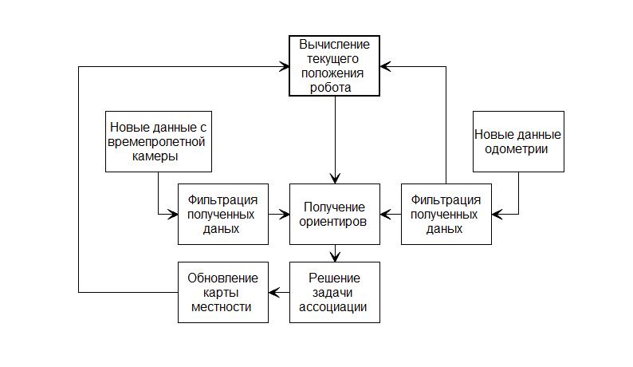
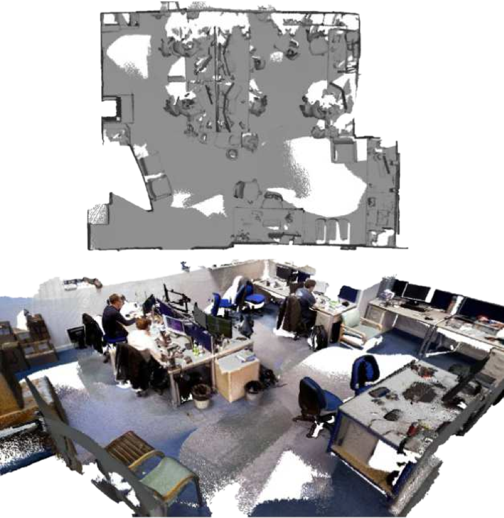

Аналитический обзор существующих алгоритмов навигации и их практических реализаций
1.1 Общие сведения об алгоритмах навигации в неизвестной среде
В настоящее время для навигации робота в условиях недетерминированной среды, применяются различные алгоритмы картографирования среды, определения своего положения в пространстве относительно составленной карты, а также решения задачи поиска возможной траектории движения. Метод SLAM (Simultaneous Localization and Mapping) [3], позволяет одновременно решать две задачи – картографирования неизвестной среды и локализации робота. На данный момент существует множество различных алгоритмов SLAM, отличающихся как по типу входной информации, представлению окружающего пространства в виде карты, так и по методам обработки этой информации.
Классификация алгоритмов локализации по размерности
картографируемого пространства:
- двумерная локализация на плоскости (2D-SLAM);
- трехмерная локализация в пространстве (3D-SLAM);
- визуальная локализация по R, G, B (Red, Green, Blue) компонентам изображения с видеокамеры (Visual-SLAM или Colour-SLAM);
- визуальная трехмерная локализация в пространстве, с использованием времепролетной камеры (RGB-D SLAM).
При использовании наиболее простых лазерных дальномеров входной информацией для алгоритма является двумерное горизонтальное сечение рельефа окружающих объектов, соответственно для обработки применяется 2D-SLAM. При наличии дополнительной оси сканирования можно получить трехмерное облако точек, дающее представление объектов помещения с учетом их взаимного расположения в пространстве, поэтому здесь применим 3D-SLAM. Однако в наше время набирают популярность датчики, позволяющие
получить трехмерное цветное изображение объектов, к примеру, времепролетные камеры подобные Kinect 2.0; для обработки трехмерных изображений с целью локализации и построения карты применяются алгоритмы RGB-D SLAM. Следует отметить, что подавляющее большинство алгоритмов локализации на плоскости могут быть расширены на трехмерное пространство.
Необходимо рассмотреть базовые принципы алгоритмов SLAM. В
качестве точки отсчета алгоритмы SLAM используют начальное
положение робота, относительно которого строятся карта и
траектория движения.
Задача SLAM разделяется на несколько подзадач (см. рисунок
1) [4]:
а) вычисление текущего положения робота на основе данных с одометрических датчиков и камеры;
б) нахождение новых ключевых точек, т. е. предположительного препятствия в пространстве;
в) ассоциация новых и старых данных (англ. Data association) — если новую ключевую точку можно сопоставить со старой, то вес старой ключевой точки увеличивается. В противном случае, новая ключевая точка добавляется в карту местности;
г) хранение карты местности в памяти.
В перечислении б) такими точками могут служить легко распознаваемые ориентиры, часто встречающиеся в пространстве, — углы стен, прямые линии, контрастные точки (для видеокамеры). И здесь очень важна однозначная идентификация ключевой точки. Робот, встречая ориентир, который он уже видел, должен точно его распознать. Для однозначного распознавания одной ключевой точки от другой существуют различные дескрипторы. Дескриптор выполняет поиск ключевых точек и запоминает их отличительные признаки. Иными словами, об одной и той же ключевой точке могут быть получены данные из разных положений робота в пространстве. При этом новые ключевые точки будут временными, пока не будет проведена ассоциация.
Эти подзадачи могут быть реализованы разными способами, комбинации которых дают различные варианты исполнения алгоритмов.

Рисунок 1 – Схема SLAM-алгоритма
Поскольку в задании на выпускную работу в качестве датчика была дана времепролетная камера Microsoft Kinect 2.0, которая является RGB-D сенсором, то далее будут рассмотрены алгоритмы RGB-D SLAM.
1.2 Реализации RGB-D SLAM алгоритмов
1.2.1 RTAB-Map
RTAB-Map (Real-Time Appearance-Based Mapping) – алгоритм SLAM на основе графа для RGB-D камер. Использует визуальный детектор замыкания петель для оценки, откуда получен новый ключевой кадр – из прежнего или нового положения (cм. рисунок 2). Для ассоциации новых и старых данных алгоритм сопоставляет кадры, полученные с разных ракурсов.

Рисунок 2 - Cхема работы RTAB-Map
Сопоставление кадров, в зависимости от предварительных установок, может достигаться за счет использования различных детекторов и дескрипторов ключевых точек: FAST, SIFT, SURF, BRIEF, BRISK, ORB [5].
-
Детектор FAST (Features from Accelerated Test) [6]
Cуществуют
детекторы определяющие ключевые точки
на изображении, в частности, углы,
применяя некоторую модель или алгоритм
напрямую к пикселям исходного
изображения. Альтернативный подход
состоит в том, чтобы использовать
алгоритмы машинного обучения для
тренировки классификатора точек на
некотором множестве изображений.
FAST-детектор строит деревья решений для
классификации пикселей. Для каждого
пикселя p изображения
рассматривается окружность с центром
в этой точке, которая вписана в квадрат
со стороной 7 пикселей (см. рисунок 3).
Окружность проходит через 16 пикселей
окрестности.
-
Дескриптор SIFT (Scale Invariant Feature Transform) [6]
Для
формирования дескриптора SIFT сначала
вычисляются значения магнитуды и
ориентации градиента в каждом пикселе,
принадлежащем окрестности ключевой
точки размером 16×16 пикселей.

Рисунок 3 – Рабочая окрестность пикселя при использовании FAST-детектора
Магнитуды градиентов при этом учитываются с весами, пропорциональными значению функции плотности нормального распределения с математическим ожиданием в рассматриваемой ключевой точке и стандартным отклонением, равным половине ширины окрестности (веса Гауссова распределения используются для того, чтобы уменьшить влияние на итоговый дескриптор градиентов, вычисленных в пикселях, находящихся дальше от ключевой точки).
-
Дескриптор SURF (Speeded up Robust Features) [6]
Относится
к числу тех дескрипторов, которые
одновременно выполняют поиск ключевых
точек и строят их описание, инвариантное
к изменению масштаба и вращения. Кроме
того, сам поиск ключевых точек обладает
инвариантностью в том смысле, что
повернутый объект сцены имеет тот же
набор ключевых точек, что и образец.
-
Дескриптор BRIEF (Binary Robust Independent Elementary
Features) [6]
Цель
создания BRIEF-дескриптора состояла в
том, чтобы обеспечить распознавание
одинаковых участков изображения, которые
были сняты с разных точек зрения. При
этом ставилась задача максимально
уменьшить количество выполняемых
вычислений.
-
BRISK (Binary
Robust Invariant
Scalable Key-points) [7]
Данный
метод представлен в 2011 г. Детектирование
ключевых точек осуществляется с помощью
FAST-детектора, в качестве дескриптора
используется BRIEF, но в их работу были
внесены некоторые изменения. BRISK
отличается от остальных методов тем,
что он определяет наибольшее количество
ключевых точек, но в них попадает и
цифровой шум, при этом на фильтрацию
образовавшихся ложных связей затрачивается
значительное количество времени, хотя
итоговая точность высока.
-
ORB (Oriented
FAST and
Rotated
Brief) [7]
Представлен
также в 2011 г. В его основе лежит комбинация
таких алгоритмов как детектор FAST и
дескриптор BRIEF с некоторыми улучшениями.
Метод ORB имеет лучшую скорость в вычислении
ключевых точек и расчета их дескрипторов,
что позволяет использовать его в задачах,
где необходима обработка изображений
в реальном времени. Одной из таких задач
является слежение за движущимся объектом.
Но высокая скорость работы сказывается
на точности сопоставления изображений
не в лучшую сторону. Наличие цифрового
шума или размытие изображений еще больше
ухудшает результаты программы.
Следует подробнее рассмотреть работу RTAB-Map. Каждый узел графа (ключевой кадр) содержит свою позицию в 3D пространстве, цветную 3D карту глубины и список ключевых точек карты, которые обнаружены на данном изображении. Рёбра графа отражают связь между этими узлами. Связь создаётся только между соседними узлами или узлами, между которыми детектируется замыкание петли [8].
Детектор замыкания петель осуществляет поиск соотношения между дескрипторами ключевых точек текущего ключевого кадра и дескрипторами ключевых точек, обнаруженных ранее (см. рисунок 4). Если количество общих ключевых точек у текущего ключевого кадра и у кадра с наибольшим соответствием превышает определённый порог, то происходит замыкание петли. При этом позиция текущего кадра уточняется для совпадения ключевых кадров с предыдущим, а остальные узлы петли оптимизируются. И добавляется соответствующее новое ребро [8].
После нахождения замыкания петли позиции графа оптимизируются с целью минимизации ошибки в графе.

Рисунок 4 - Работа детектора замыкания петель
Алгоритм работы:
- первый кадр становится ключевым. Его карта глубины добавляется на 3D кадр. А дескрипторы ключевых точек в “мешок слов” (англ. bag of words). Bag of words – это метод классификации изображений, использует в качестве описания гистограмму вхождений отдельных шаблонов в изображение;
- следующий ключевой кадр будет добавлен, только если робот переместится на некоторое расстояние или прошёл заданный промежуток времени;
- положение нового ключевого кадра уточняется благодаря соотношению ключевых точек двух кадров и расстоянию, имеющемуся благодаря карте глубины;
- выполняется проверка обнаружения замыкания петли;
- 3D карта нового ключевого кадра добавляется на карту. А дескрипторы ключевых кадров в bag of words. И процесс начинается сначала.
Точность построения карты определяется размером ячейки сетки графа и составляет 0,05 м [8].
Трехмерная карта, полученная с помощью RTAB-Map, представлена на рисунке 5.

Рисунок 5 – Трехмерная карта, полученная с помощью RTAB-Map
1.2.2 ElasticFusion
ElasticFusion
позволяет строить трехмерную карту
окружения.
Алгоритм не использует
граф посещённых локаций и полностью
опирается только на построенную карту
при локализации и поиске замыканий
петель. Для поиска замыканий алгоритм
случайно выбирает небольшие части
карты, с которыми впоследствии сравниваются
новые кадры. После нахождения замыкания
участок карты деформируется в соответствии
с накопленной ошибкой позиционирования.
Точность построения карты составляет 0,03 м [9].
Трехмерная карта, полученная с помощью ElasticFusion, представлена на рисунке 6.

Рисунок 6 – Трехмерная карта, полученная с помощью ElasticFusion
1.2.3 RGBDSLAM ROS
RGBDSLAM – это решение для RGB-D камер, являющееся программным пакетом для ROS (Robot Operating System) [10], которое позволяет получать трехмерную карту окружения в виде цветного облака точек (см. рисунок 7) [11]. Это достигается за счет использования визуальных дескрипторов ключевых точек SURF или SIFT для совмещения пар полученных изображений. Кроме того используется метод RANSAC для надежной оценки трехмерного преобразования между ними.
RANSAC (RANdom SAmple Consensus) – стабильный метод оценки параметров модели на основе случайных выборок. Схема RANSAC устойчива к зашумлённости исходных данных. Метод был предложен в 1981 году Фишлером и Боллесом. Схема работы метода RANSAC заключается в циклическом повторении поиска матрицы трансформации между случайно выбираемыми четырьмя ключевыми точками на одном изображении и соответствующим им четырём точкам на втором [12].
Возможность
выбора между двумя вариантами дескрипторов,
позволяет работать алгоритму в различных
условиях освещения.
Чтобы выполнить
обработку, текущее изображение
сопоставляется с предыдущим. Впоследствии
создается граф, узлы которого соответствуют
кадрам с камеры, а ребра которого
соответствуют оцененным трехмерным
преобразованиям. Затем граф оптимизируется
для уменьшения накопленных ошибок
позиционирования.
Точность построения карты 0,05 м [9].

Рисунок 7 – Трехмерная карта, полученная с помощью RGBDSLAM
1.2.4 ORB-SLAM
ORB-SLAM
(Oriented FAST and Rotated BRIEF SLAM) – визуальный
монокулярный алгоритм
SLAM [13].
Существует модернизация данного
алгоритма для применения с RGB-D камерами
и стереопарами.
Алгоритм использует
детектор и дескриптор ключевых точек
ORB, и bag of words оптимизацию. Метод основан
на отслеживании ключевых точек, в
результате чего, в качестве ключевого
кадра выступает изображение с набором
ключевых точек и найденных на обоих
кадрах. Получаемые ORB-дескрипторы
ключевых точек инвариантны к углу
зрения, повороту камеры и освещенности.
Это позволяет алгоритму с высокой
точностью и надежностью отслеживать
замыкания петель, а также обеспечивает
высокую надежность при релокализации.
По сравнению с другими дескрипторами
ORB вычисляется за меньшее время.
Точность построения карты 0,05 м.
Трехмерная карта, полученная с помощью ORB-SLAM, представлена на рисунке 8.
Рисунок 8 – Трехмерная карта, полученная с помощью ORB-SLAM
1.3 Сравнение реализаций SLAM алгоритмов
Важным критерием сравнения SLAM алгоритмов является совместимость с датчиками. В задании на выпускную работу в качестве датчика была дана времепролетная камера Microsoft Kinect 2.0.
Таблица 1 - Сравнительная характеристика реализаций SLAM-алгоритмов
|
Реализация |
RTAB-Map |
ElasticFusion |
RGBDSLAM |
ORB-SLAM |
|
Использованные методы |
RANSAC, bag-of-words |
RANSAC |
RANSAC |
bag-of-words |
|
Детекторы |
SURF, FAST, ORB |
н/д |
SURF, SIFT |
ORB |
|
Дескрипторы |
SURF, SIFT, BRIEF, ORB |
н/д |
SURF |
ORB |
|
Точность составления карты, м |
0,05 |
0,03 |
0,05 |
0,05 |
|
Адаптирована для использования с RGB-D сенсором Kinect 2.0. |
Да |
Нет |
Нет |
Нет |
|
Интеграция с ROS |
Да |
Нет |
Да |
Нет |
Из таблицы 1 можно сделать сравнительный вывод в пользу реализации RTAB-MAP. Несмотря на то, что она менее точно выполняет локализацию по сравнению с ElasticFusion, RTAB-MAP обладает рядом преимуществ:
- позволяет использовать разные детекторы и дескрипторы в зависимости от задачи;
- адаптирована для использования с Kinect 2.0.
1.3 Выводы по разделу
В данном разделе были рассмотрены наиболее известные и представляющие интерес реализации метода одновременной локализации и построения карты. Аналитический обзор показал, что большинство существующих реализаций не адаптировано для использования с времепролетной камерой Microsoft Kinect 2.0.
В рамках обзора проведен анализ реализаций, учитывающий достоинства и недостатки каждого алгоритма. Результат анализа сведён в таблицу 1, на основании которой был произведен выбор в пользу реализации RTAB-Map для дальнейшего использования в качестве основы при решении задачи навигации.
Метод SLAM позволяет составить карту неизвестной среды. Но для решения задачи навигации дополнительно требуется выполнение следующих подзадач: автоматическое планирование маршрута, управление перемещениями робота и обход препятствий, коррекция траектории движения робота. Для этого требуется разработка собственного программного обеспечения.
Целью настоящей работы является разработка и практическая реализация алгоритмов навигации робота в неизвестной среде, которые полностью решают задачу навигации, используя при этом возможности времепролетной камеры Microsoft Kinect 2.0.